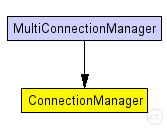
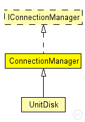

This documentation is released under the Creative Commons license
This documentation is released under the Creative Commons licenseModule to control all connection related stuff
The central module that coordinates the connections between all nodes, and handles dynamic gate creation. ConnectionManager therefore periodically communicates with the mobility module and ChannelAccess.
The four parameters pMax, sat, alpha, and carrierFrequency are used to calculate the interference distance between nodes. The values used here in ConnectionManager are used to calculate the upper bound, i.e. they can be redifined in the analogue models, but never such that the maximal interference distance is exeeded.
Author: Steffen Sroka, Daniel Willkomm, Karl Wessel
See also: MobilityBase
The following diagram shows usage relationships between types. Unresolved types are missing from the diagram. Click here to see the full picture.
The following diagram shows inheritance relationships for this type. Unresolved types are missing from the diagram. Click here to see the full picture.
| Name | Type | Description |
|---|---|---|
| UnitDisk | simple module | (no description) |
| Name | Type | Description |
|---|---|---|
| MultiConnectionManager | network |
This example shows how to use multiple ConnectionManagers in your simulation. |
| Name | Type | Default value | Description |
|---|---|---|---|
| coreDebug | bool |
debug switch for core framework |
|
| sendDirect | bool |
send directly to the node or create separate gates for every connection |
|
| pMax | double |
maximum sending power used for this network [mW] |
|
| sat | double |
minimum signal attenuation threshold [dBm] |
|
| alpha | double |
minimum path loss coefficient |
|
| carrierFrequency | double |
minimum carrier frequency of the channel [Hz] |
|
| drawMaxIntfDist | bool | false |
should the maximum interference distance be displayed for each node? |
| Name | Value | Description |
|---|---|---|
| display | i=abstract/multicast |
// Module to control all connection related stuff // // The central module that coordinates the connections between all // nodes, and handles dynamic gate creation. ConnectionManager therefore // periodically communicates with the mobility module and // ChannelAccess. // // The four parameters pMax, sat, alpha, and carrierFrequency are used // to calculate the interference distance between nodes. The values used // here in ConnectionManager are used to calculate the upper bound, // i.e. they can be redifined in the analogue models, but never such // that the maximal interference distance is exeeded. // // @author Steffen Sroka, Daniel Willkomm, Karl Wessel // @see MobilityBase // simple ConnectionManager like IConnectionManager { parameters: // debug switch for core framework bool coreDebug; // send directly to the node or create separate gates for every connection bool sendDirect; // maximum sending power used for this network [mW] double pMax @unit(mW); // minimum signal attenuation threshold [dBm] double sat @unit(dBm); // minimum path loss coefficient double alpha; // minimum carrier frequency of the channel [Hz] double carrierFrequency @unit(Hz); // should the maximum interference distance be displayed for each node? bool drawMaxIntfDist = default(false); @display("i=abstract/multicast"); }
This documentation is released under the Creative Commons license